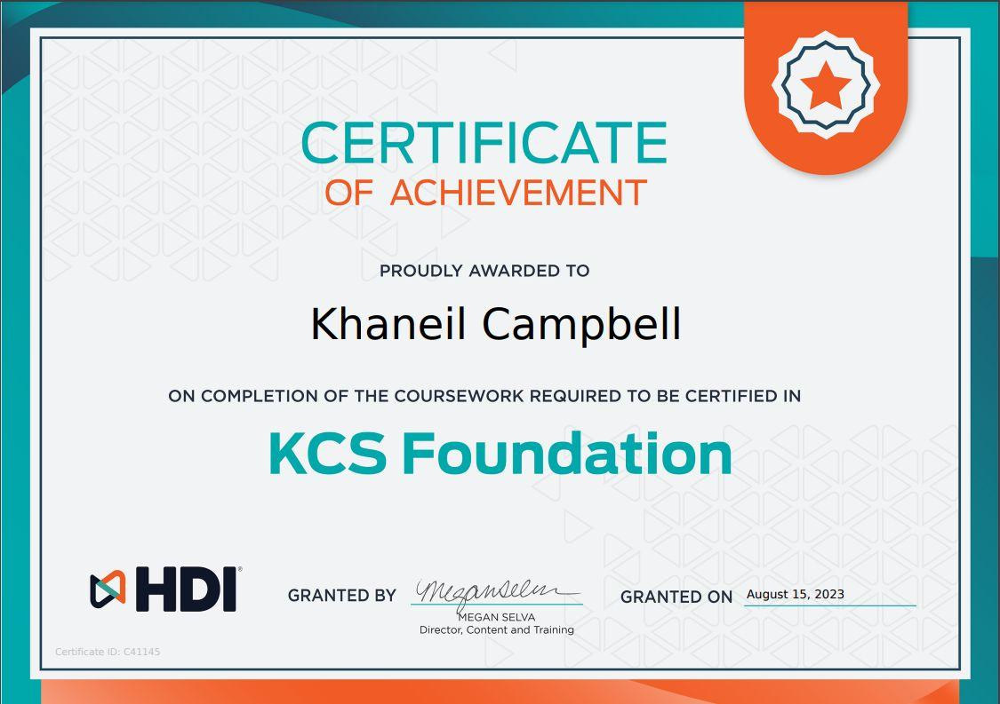

Credential · Knowledge management
HDI KCS Foundation
Knowledge-Centered Service: capturing what support teams learn while they solve issues, structuring it so it can be found, and improving it every time it is reused.
- Issuer
- HDI
- Holder
- Khaneil Campbell
- Granted
- August 15, 2023
- Certificate ID
- C41145
KCS treats knowledge as a by-product of solving problems, not a separate writing project. The article gets written or improved in the moment a technician resolves an issue, in the words customers actually use, and its quality is judged by whether the next person finds it and fixes the problem faster.
That is the habit behind the knowledge base articles I write at Columbia University, and behind the way every lab on this site is documented: the steps, the evidence and the dead ends, written so someone else can repeat them.
